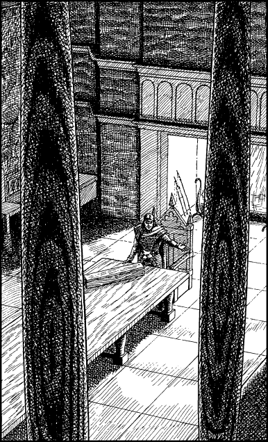

240
The doors swing open onto a gallery which encircles three sides of a large banquet hall. Below, through the wooden spindles of the gallery’s parapet rail, you can see the hall itself. Tapestries drape the walls and a blazing fire crackles in a great stone fireplace that occupies much of the north wall. Your adversary is sitting alone in a throne-like chair at the head of a long banqueting table. A plain, oblong-shaped wooden case lies closed on the table before him.
‘Welcome, Lone Wolf—so glad you could join me,’ he says, his voice oozing sarcasm as he gets to his feet and tilts his head condescendingly towards the gallery. You see his right hand move below the edge of the table and, moments later, you hear the double doors swing shut and lock behind you. Anxiously you cast your eyes around the hall, searching out his hidden accomplices.
‘We’re alone,’ snaps Wolf’s Bane. He raises a hand and beckons you to descend the gallery stairs to the hall below. ‘The time has come, Lone Wolf. Our jaunt across Avaros has been leading to this moment of truth.’

Wolf’s Bane reaches out to the slim case that is laid on the table before him and he flips open its lid. Inside you see two thin-bladed duelling rapiers couched on a velvet liner.
‘We two are as equally matched as these fine blades,’ he says, in a voice as syrupy as rancid molasses. ‘Come, Lone Wolf. I challenge you to duel honourably. Come and choose your weapon and let fate decide who of us will triumph this day.’
You magnify your vision and scrutinize the open case. Your senses confirm that these swords are finely crafted blades. They are not booby-trapped, nor are they magically cursed in any way.
If you choose to accept Wolf’s Bane’s challenge to a duel to the death using these swords, turn to 304.
If you choose to decline his challenge, turn to 85.